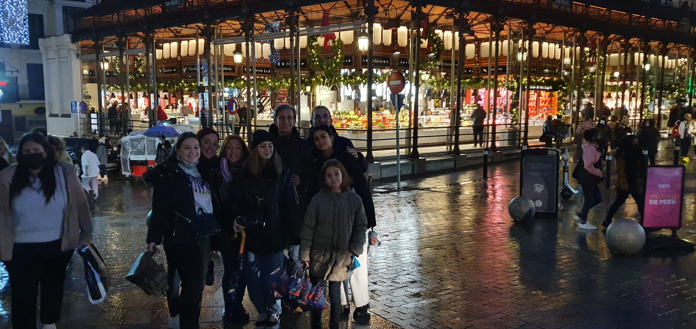

FOTOS
26 diciembre 2022 al 30 diciembre

Me fuí a Madrid en Navidad , del 26 al 30 de diciembre y mi experiencia en la ciudad fue asi...
Visitamos el Palacio Real , la Plaza Mayor, la Gran Vía, la Plaza de Cibeles... Pero lo que mas me gustó fue el Museo del Prado; Ver "Las Meninas" de Velázquez en directo me hizo pensar mucho y refexionar.
 |
ANÉCDOTAS
En una visita a la capital de nuestro país no puede faltar un bocata de calamares, un paseo por La Castellana o una visita a la Plaza Mayor
Estas son algunas anécdotas que vivimos allí